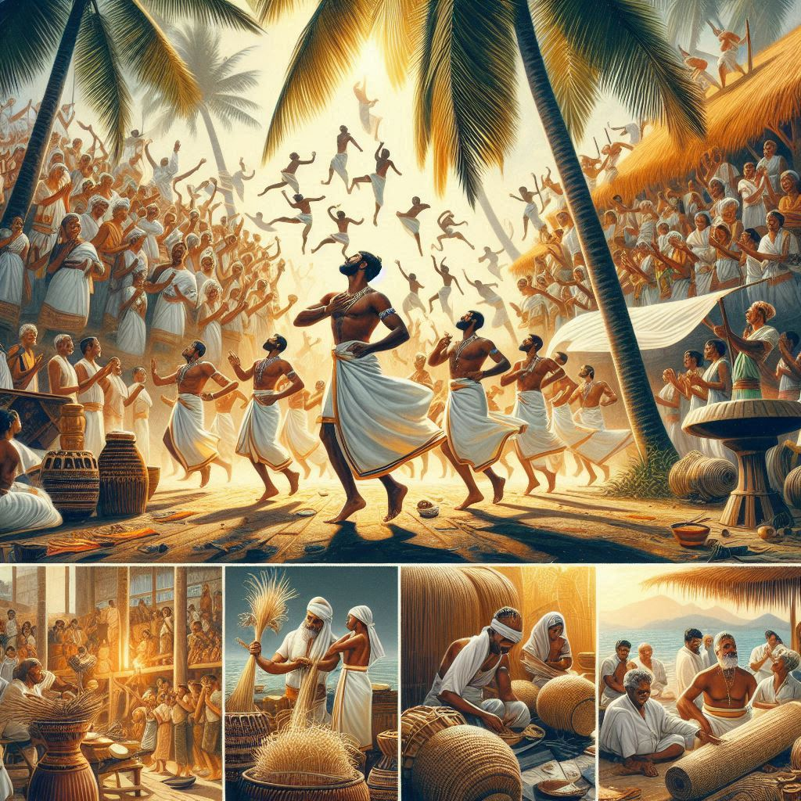
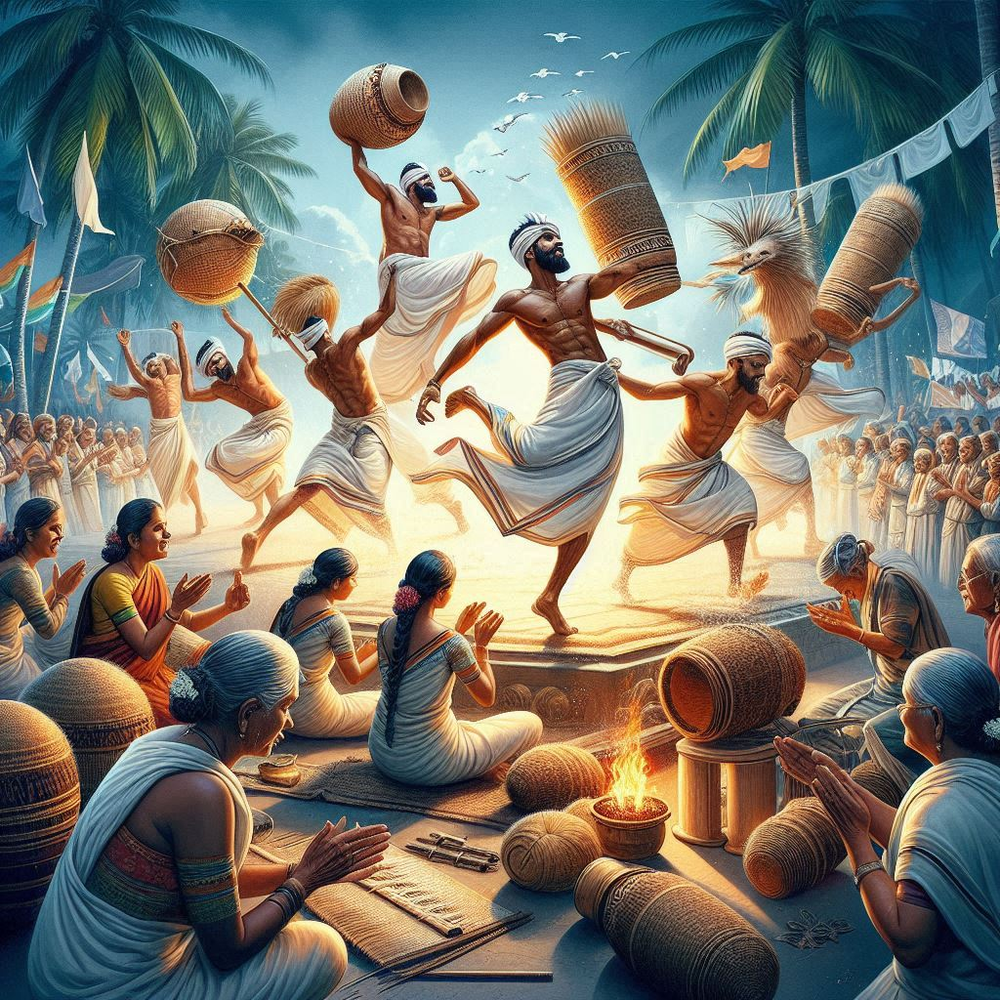

Traditions of Lakshadweep:
The traditions of Lakshadweep are deeply rooted in its Islamic heritage, influenced by a blend
of Arabian, Malayalam, and local cultures. The people of
Lakshadweep, mainly of the Muslim faith, follow traditional practices that have been passed
down for generations. These traditions reflect their way of life, social structure, and respect for nature, and
are integral to the cultural identity of the islands.
1. Religious Traditions:
- Islamic Practices: The majority of the population in Lakshadweep practices
Islam, and religious traditions play a central role in their daily lives. The islanders
observe daily prayers, follow the five pillars of Islam, and celebrate Islamic festivals
like Eid al-Fitr and Eid al-Adha with great fervor. The Holy
Month of Ramadan is observed with fasting, prayer, and charity, followed by the grand
celebration of Eid.
- Mosques and Community Gatherings: The islands are dotted with mosques,
and these religious centers also serve as places for community gatherings and celebrations. The
Ujra Mosque on Kavaratti Island is a famous example, drawing both
locals and tourists for its beautiful architecture and historical significance.
2. Cultural and Community Life:
- Mahl Culture: The Mahl culture is unique to the islands, especially on
Minicoy Island. The people of Minicoy speak the Mahl language, and
their cultural practices are distinct from those of other islands. Their traditions involve elaborate
dance performances, rituals, and the making of traditional
artifacts, such as wooden crafts and woven materials.
- Folk Music and Dance: Traditional folk music and dances are an integral part of island
life. The most popular dance form is the Fangri or Kolkali, a rhythmic
dance performed to the beats of traditional drums. This dance is often performed at community gatherings,
especially during festivals and celebrations. Lively drumming and
singing are essential elements of these celebrations, uniting people in communal
festivities.
3. Festivals and Celebrations:
- Eid Festivals: The most significant festival in Lakshadweep is Eid,
marking the end of Ramadan and the festival of sacrifice, Eid al-Adha. These festivals
are celebrated with prayers, feasts, and the exchange of gifts among family and friends.
Traditional sweets, such as Sheer Kurma, are prepared during these
celebrations.
- Minicoy’s Local Festivals: The people of Minicoy celebrate their own local
festivals that reflect their distinct Mahl heritage. These festivals are
marked by traditional music, dances, and a sense of community
celebration.


4. Fishing Traditions:
- Fishing and Boat Building: Traditionally, the people of Lakshadweep rely heavily on
fishing for their livelihood. Traditional boat-building is an art passed down through
generations, with local craftsmen known for creating wooden boats used for fishing and
inter-island travel. Fishing is not only a livelihood but also an important social activity, bringing
communities together, especially during full moon fishing expeditions.
5. Dress and Craftsmanship:
- The traditional dress of Lakshadweep is a blend of Islamic and local influences. Women typically wear
long, flowing dresses called Burkhas or Salwar Kameez,
while men wear kurta-pajamas or lungis. The local people are also
skilled in creating handicrafts, especially woven mats and textiles made from local
materials.
6. Culinary Traditions:
- Traditional Cuisine: The cuisine of Lakshadweep reflects its coastal environment. Fish
is a staple food, and seafood dishes are an important part of the daily diet. The local
dishes are typically spicy, with heavy use of coconut and
rice. One of the most famous traditional dishes is Masala Fish, which
is prepared with local spices and served with rice.
- Sweets and Desserts: Traditional sweets such as Madhura, Sheer
Kurma, and Laddus are commonly prepared during religious celebrations and
festivals.
7. Respect for Nature:
- Environmental Traditions: Lakshadweep’s traditions are also closely tied to the
environment, with deep respect for nature and the sea. The locals have traditional methods of preserving
marine life and coral reefs. They practice sustainable fishing and are conscious of maintaining the
balance between nature and their livelihoods.
Conclusion:
The traditions of Lakshadweep are a blend of religious devotion, cultural
uniqueness, and community spirit. The local people follow a lifestyle that
values family, religion, community, and a deep connection
with nature. Despite the growing influence of modernity, the traditional ways of life continue to play an
essential role in shaping the identity of the islands.